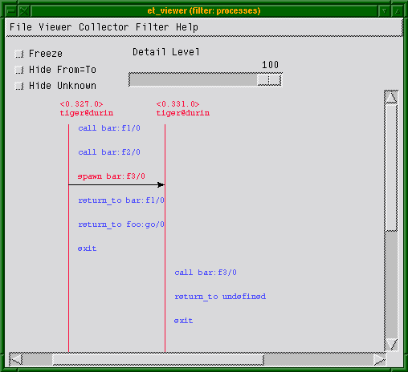

Trace Tool Builder
View SourceIntroduction
Trace Tool Builder is a base for building trace tools for single node or distributed Erlang systems. It requires the Runtime_Tools application to be available on the traced node.
The following are the main features of Trace Tool Builder:
- Start tracing to file ports on many nodes with one function call.
- Write more information to a trace information file, which is read during formatting.
- Restore previous configuration by maintaining a history buffer and handling configuration files.
- Provide some simple support for sequential tracing.
- Format binary trace logs and merge logs from multiple nodes.
The intention of Trace Tool Builder is to serve as a base for tailor-made trace
tools, but it can also be used directly from the Erlang shell (it can mimic
dbg behaviour while still providing useful additions, such as match
specification shortcuts). Trace Tool Builder only allows the use of file port
tracer, so to use other types of trace clients it is better to use dbg
directly.
Getting Started
Module ttb is the interface to all functions in Trace Tool Builder.
To get started, the least you need to do is to start a tracer with
ttb:tracer/0,1,2, and set the required trace flags on the
processes you want to trace with ttb:p/2.
When the tracing is completed, stop the tracer with
ttb:stop/0,1 and format the trace log with
ttb:format/1,2 (if there is anything to format).
Useful functions:
ttb:tracer/0,1,2- Opens a trace port on each node to be traced. By default, trace messages are written to binary files on remote nodes (the binary trace log).ttb:p/2- Specifies the processes to be traced. Trace flags specified in this call specify what to trace on each process. This function can be called many times if you like different trace flags to be set on different processes.ttb:tp/2,3,4orttb:tpl/2,3,4- If you want to trace function calls (that is, if you have trace flagcallset on any process), you must also set trace patterns on the required function(s) withttb:tp/2,3,4orttb:tpl/2,3,4. A function is only traced if it has a trace pattern. The trace pattern specifies how to trace the function by using match specifications. Match specifications are described in the ERTS User's Guide.ttb:stop/0,1- Stops tracing on all nodes, deletes all trace patterns, and flushes the trace port buffer.ttb:format/1/2- Translates the binary trace logs into something readable. By default,ttbpresents each trace message as a line of text, but you can also write your own handler to make more complex interpretations of the trace information. A trace log can also be presented graphically with application Event Tracer (ET).If option
formatis specified tottb:stop/1, the formatting is automatically done when stoppingttb.
Tracing Local Node from Erlang Shell
The following small module is used in the subsequent example:
-module(m).
-export([f/0]).
f() ->
receive
From when is_pid(From) ->
Now = erlang:now(),
From ! {self(),Now}
end.The following example shows the basic use of ttb from the Erlang shell.
Default options are used both for starting the tracer and for formatting (the
custom fetch directory is however provided). This gives a trace log named
Node-ttb in the newly created directory, where Node is the node name. The
default handler prints the formatted trace messages in the shell:
(tiger@durin)47> %% First I spawn a process running my test function
(tiger@durin)47> Pid = spawn(m,f,[]).
<0.125.0>
(tiger@durin)48>
(tiger@durin)48> %% Then I start a tracer...
(tiger@durin)48> ttb:tracer().
{ok,[tiger@durin]}
(tiger@durin)49>
(tiger@durin)49> %% and activate the new process for tracing
(tiger@durin)49> %% function calls and sent messages.
(tiger@durin)49> ttb:p(Pid,[call,send]).
{ok,[{<0.125.0>,[{matched,tiger@durin,1}]}]}
(tiger@durin)50>
(tiger@durin)50> %% Here I set a trace pattern on erlang:now/0
(tiger@durin)50> %% The trace pattern is a simple match spec
(tiger@durin)50> %% indicating that the return value should be
(tiger@durin)50> %% traced. Refer to the reference_manual for
(tiger@durin)50> %% the full list of match spec shortcuts
(tiger@durin)50> %% available.
(tiger@durin)51> ttb:tp(erlang,now,return).
{ok,[{matched,tiger@durin,1},{saved,1}]}
(tiger@durin)52>
(tiger@durin)52> %% I run my test (i.e. send a message to
(tiger@durin)52> %% my new process)
(tiger@durin)52> Pid ! self().
<0.72.0>
(tiger@durin)53>
(tiger@durin)53> %% And then I have to stop ttb in order to flush
(tiger@durin)53> %% the trace port buffer
(tiger@durin)53> ttb:stop([return, {fetch_dir, "fetch"}]).
{stopped, "fetch"}
(tiger@durin)54>
(tiger@durin)54> %% Finally I format my trace log
(tiger@durin)54> ttb:format("fetch").
({<0.125.0>,{m,f,0},tiger@durin}) call erlang:now()
({<0.125.0>,{m,f,0},tiger@durin}) returned from erlang:now/0 ->
{1031,133451,667611}
({<0.125.0>,{m,f,0},tiger@durin}) <0.72.0> !
{<0.125.0>,{1031,133451,667611}}
okBuild Your Own Tool
The following example shows a simple tool for "debug tracing", that is, tracing of function calls with return values:
-module(mydebug).
-export([start/0,trc/1,stop/0,format/1]).
-export([print/4]).
%% Include ms_transform.hrl so that I can use dbg:fun2ms/2 to
%% generate match specifications.
-include_lib("stdlib/include/ms_transform.hrl").
%%% -------------Tool API-------------
%%% ----------------------------------
%%% Star the "mydebug" tool
start() ->
%% The options specify that the binary log shall be named
%% <Node>-debug_log and that the print/4 function in this
%% module shall be used as format handler
ttb:tracer(all,[{file,"debug_log"},{handler,{{?MODULE,print},0}}]),
%% All processes (existing and new) shall trace function calls
%% We want trace messages to be sorted upon format, which requires
%% timestamp flag. The flag is however enabled by default in ttb.
ttb:p(all,call).
%%% Set trace pattern on function(s)
trc(M) when is_atom(M) ->
trc({M,'_','_'});
trc({M,F}) when is_atom(M), is_atom(F) ->
trc({M,F,'_'});
trc({M,F,_A}=MFA) when is_atom(M), is_atom(F) ->
%% This match spec shortcut specifies that return values shall
%% be traced.
MatchSpec = dbg:fun2ms(fun(_) -> return_trace() end),
ttb:tpl(MFA,MatchSpec).
%%% Format a binary trace log
format(Dir) ->
ttb:format(Dir).
%%% Stop the "mydebug" tool
stop() ->
ttb:stop(return).
%%% --------Internal functions--------
%%% ----------------------------------
%%% Format handler
print(_Out,end_of_trace,_TI,N) ->
N;
print(Out,Trace,_TI,N) ->
do_print(Out,Trace,N),
N+1.
do_print(Out,{trace_ts,P,call,{M,F,A},Ts},N) ->
io:format(Out,
"~w: ~w, ~w:~n"
"Call : ~w:~w/~w~n"
"Arguments :~p~n~n",
[N,Ts,P,M,F,length(A),A]);
do_print(Out,{trace_ts,P,return_from,{M,F,A},R,Ts},N) ->
io:format(Out,
"~w: ~w, ~w:~n"
"Return from : ~w:~w/~w~n"
"Return value :~p~n~n",
[N,Ts,P,M,F,A,R]).To distinguish trace logs produced with this tool from other logs, option file
is used in tracer/2. The logs are therefore fetched to a
directory named ttb_upload_debug_log-YYYYMMDD-HHMMSS
By using option handler when starting the tracer, the information about how to
format the file is stored in the trace information file (.ti). This is not
necessary, as it can be specified when formatting instead. However, It can be
useful if you, for example, want to format trace logs automatically using option
format in ttb:stop/1. Also, you do not need any knowledge of the content of
a binary log to format it the way it is intended. If option handler is
specified both when starting the tracer and when formatting, the one specified
when formatting is used.
Trace flag call is set on all processes. This means that any function
activated with command trc/1 is traced on all existing and new processes.
Running Trace Tool Builder against Remote Node
The Observer application might not always be available on the node to be traced (in the following called the "traced node"). However, Trace Tool Builder can still be run from another node (in the following called the "trace control node") as long as the following is fulfilled:
- The Observer application is available on the trace control node.
- The Runtime_Tools application is available on both the trace control node and the traced node.
If Trace Tool Builder is to be used against a remote node, it is highly
recommended to start the trace control node as hidden. This way it can connect
to the traced node without being "seen" by it, that is, if the nodes/0 BIF is
called on the traced node, the trace control node does not show. To start a
hidden node, add option -hidden to the erl command, for example:
% erl -sname trace_control -hiddenDiskless Node
If the traced node is diskless, ttb must be started from a trace control node
with disk access, and option file must be specified to function tracer/2
with value {local, File}, for example:
(trace_control@durin)1> ttb:tracer(mynode@diskless,
{file,{local,{wrap,"mytrace"}}}).
{ok,[mynode@diskless]}More Tracing Options
When setting up a trace, the following features can also be activated:
- Time-constrained tracing
- Overload protection
- Autoresume
dbgmode
Time-Constrained Tracing
It can sometimes be helpful to enable trace for a specified period of time (for
example, to monitor a system for 24 hours or half a second). This can be done
with option {timer, TimerSpec}. If TimerSpec has the form of MSec, the
trace is stopped after MSec milliseconds using ttb:stop/0. If more options
are provided (TimerSpec = {MSec, Opts}), ttb:stop/1 is called instead with
Opts as argument.
The timer is started with ttb:p/2, so any trace patterns must be set up in
advance. ttb:start_trace/4 always sets up all patterns before invoking
ttb:p/2.
The following example shows how to set up a trace that is automatically stopped and formatted after 5 seconds:
(tiger@durin)1> ttb:start_trace([node()],
[{erlang, now,[]}],
{all, call},
[{timer, {5000, format}}]).Note
Because of network and processing delays, the period of tracing is approximate.
Overload Protection
When tracing live systems, always take special care to not overload a node with
too heavy tracing. ttb provides option overload to address this problem.
{overload, MSec, Module, Function} instructs the ttb back end (a part of the
Runtime_Tools application) to perform overload
check every MSec millisecond. If the check (named Module:Function(check))
returns true, tracing is disabled on the selected node.
Overload protection activated on one node does not affect other nodes, where the
tracing continues as normal. ttb:stop/0 fetches data from all clients,
including everything collected before the activation of overload protection.
Note
It is not allowed to change trace details (with ttb:p/2 and ttb:tp/tpl...)
once overload protection is activated in one of the traced nodes. This is to
avoid trace setup being inconsistent between nodes.
Module:Function provided with option overload must handle three calls:
init, check, and stop. init and stop allow some setup and teardown
required by the check. An overload check module can look as follows:
-module(overload).
-export([check/1]).
check(init) ->
Pid = sophisticated_module:start(),
put(pid, Pid);
check(check) ->
get(pid) ! is_overloaded,
receive
Reply ->
Reply
after 5000 ->
true
end;
check(stop) ->
get(pid) ! stop.Note
check is always called by the same process, so put and get are possible.
Autoresume
A node can crash (probably a buggy one, hence traced). Use resume to resume
tracing on the node automatically when it gets back. The failing node then tries
to reconnect to trace control node when Runtime_Tools is started. This implies
that Runtime_Tools must be included in the startup chain of other nodes (if
not, you can still resume tracing by starting Runtime_Tools manually, that is,
by an RPC call).
To not lose the data that the failing node stored up to the point of crash, the
control node tries to fetch it before restarting trace. This must occur within
the allowed time frame, otherwise it is aborted (default is 10 seconds, but it
can be changed with {resume, MSec}). The data fetched this way is then merged
with all other traces.
The autostart feature requires more data to be stored on traced nodes. By
default, the data is stored automatically to the file named "ttb_autostart.bin"
in the current working directory (cwd) of the traced node. Users can change this
behaviour (that is, on diskless nodes) by specifying their own module to handle
autostart data storage and retrieval (ttb_autostart_module environment
variable of runtime_tools). For information about the API, see module ttb.
The following example shows the default handler:
-module(ttb_autostart).
-export([read_config/0,
write_config/1,
delete_config/0]).
-define(AUTOSTART_FILENAME, "ttb_autostart.bin").
delete_config() ->
file:delete(?AUTOSTART_FILENAME).
read_config() ->
case file:read_file(?AUTOSTART_FILENAME) of
{ok, Data} -> {ok, binary_to_term(Data)};
Error -> Error
end.
write_config(Data) ->
file:write_file(?AUTOSTART_FILENAME, term_to_binary(Data)).Note
Remember that file trace ports buffer the data by default. If the node
crashes, trace messages are not flushed to the binary log. If the risk of
failure is high, it can be a good idea to flush the buffers every now and then
automatically. Passing {flush, MSec} as an option of ttb:tracer/2 flushes
all buffers every MSec millisecond.
dbg Mode
Option {shell, ShellType} allows making ttb operation similar to dbg.
Using {shell, true} displays all trace messages in the shell before storing
them. {shell, only} additionally disables message storage (making the tool to
behave exactly like dbg). This is allowed only with IP trace ports
({trace, {local, File}}).
Command ttb:tracer(dbg) is a shortcut for the pure dbg mode
({shell, only}).
Trace Information and File .ti
In addition to the trace log file(s), a file with extension .ti is created
when Trace Tool Builder is started. This is the trace information file. It is a
binary file, which contains the process information, trace flags used, the name
of the node to which it belongs, and all information written with function
ttb:write_trace_info/2. .ti files are always fetched with other logs when
the trace is stopped.
Except for the process information, everything in the trace information file is
passed on to the handler function when formatting. Parameter TI is a list of
{Key,ValueList} tuples. The keys flags, handler, file, and node are
used for information written directly by ttb.
Information to the trace information file by can be added by calling
ttb:write_trace_info/2. Notice that ValueList always is a list, and if you
call write_trace_info/2 many times with the same Key, the ValueList is
extended with a new value each time.
Example:
ttb:write_trace_info(mykey,1) gives the entry {mykey,[1]} in TI. Another
call, ttb:write_trace_info(mykey,2), changes this entry to {mykey,[1,2]}.
Wrap Logs
If you want to limit the size of the trace logs, you can use wrap logs. This
works almost like a circular buffer. You can specify the maximum number of
binary logs and the maximum size of each log. ttb then creates a new binary
log each time a log reaches the maximum size. When the maximum number of logs
are reached, the oldest log is deleted before a new one is created.
Note
The overall size of data generated by ttb can be greater than the wrap
specification suggests. If a traced node restarts and autoresume is enabled,
the old wrap log is always stored and a new one is created.
Wrap logs can be formatted one by one or all at once. See Formatting.
Formatting
Formatting can be done automatically when stopping ttb (see section
Automatically Collect and Format Logs from All Nodes),
or explicitly by calling function ttb:format/1,2.
Formatting means to read a binary log and present it in a readable format. You
can use the default format handler in ttb to present each trace message as a
line of text, or write your own handler to make more complex interpretations of
the trace information. You can also use application ET to present the trace log
graphically (see section
Presenting Trace Logs with Event Tracer).
The first argument to ttb:format/1,2 specifies which binary log(s) to format.
This is usually the name of a directory that ttb created during log fetch.
Unless option disable_sort is provided, the logs from different files are
always sorted according to time-stamp in traces.
The second argument to ttb:format/2 is a list of options as follows:
out- Specifies the destination to write the formatted text. Default destination isstandard_io, but a filename can also be specified.handler- Specifies the format handler to use. If this option is not specified, optionhandlerthat is specified when starting the tracer is used. If optionhandleris not specified when starting the tracer either, a default handler is used, which prints each trace message as a text line.disable_sort- Indicates that the logs are not to be merged according to time-stamp, but processed one file after another (this can be a bit faster).
A format handler is a fun taking four arguments. This fun is called for each trace message in the binary log(s). A simple example that only prints each trace message can be as follows:
fun(Fd, Trace, _TraceInfo, State) ->
io:format(Fd, "Trace: ~p~n", [Trace]),
State
end.Here, Fd is the file descriptor for the destination file, or the atom
standard_io. _TraceInfo contains information from the trace information file
(see section Trace Information and File .ti). State is
a state variable for the format handler fun. The initial value of variable
State is specified with the handler option, for example:
ttb:format("tiger@durin-ttb", [{handler, {{Mod,Fun}, initial_state}}])
^^^^^^^^^^^^^Another format handler can be used to calculate the time spent by the garbage collector:
fun(_Fd,{trace_ts,P,gc_start,_Info,StartTs},_TraceInfo,State) ->
[{P,StartTs}|State];
(Fd,{trace_ts,P,gc_end,_Info,EndTs},_TraceInfo,State) ->
{value,{P,StartTs}} = lists:keysearch(P,1,State),
Time = diff(StartTs,EndTs),
io:format("GC in process ~w: ~w milliseconds~n", [P,Time]),
State -- [{P,StartTs}]
endA more refined version of this format handler is function handle_gc/4 in
module multitrace.erl included in directory src of the Observer application.
The trace message is passed as the second argument (Trace). The possible
values of Trace are the following:
- All trace messages described in
erlang:trace/3 {drop, N}if IP tracer is used (seedbg:trace_port/2)end_of_tracereceived once when all trace messages are processed
By giving the format handler ttb:get_et_handler(),
you can have the trace log presented graphically with et_viewer in the ET
application (see section
Presenting Trace Logs with Event Tracer).
You can always decide not to format the whole trace data contained in the fetch
directory, but analyze single files instead. To do so, a single file (or list of
files) must be passed as the first argument to format/1,2.
Wrap logs can be formatted one by one or all at once. To format one of the wrap
logs in a set, specify the exact file name. To format the whole set of wrap
logs, specify the name with * instead of the wrap count.
Example:
Start tracing:
(tiger@durin)1> ttb:tracer(node(),{file,{wrap,"trace"}}).
{ok,[tiger@durin]}
(tiger@durin)2> ttb:p(...)
...This gives a set of binary logs, for example:
tiger@durin-trace.0.wrp
tiger@durin-trace.1.wrp
tiger@durin-trace.2.wrp
...Format the whole set of logs:
1> ttb:format("tiger@durin-trace.*.wrp").
....
ok
2>Format only the first log:
1> ttb:format("tiger@durin-trace.0.wrp").
....
ok
2>To merge all wrap logs from two nodes:
1> ttb:format(["tiger@durin-trace.*.wrp","lion@durin-trace.*.wrp"]).
....
ok
2>Presenting Trace Logs with Event Tracer
For detailed information about the Event Tracer, see the ET application.
By giving the format handler ttb:get_et_handler(),
you can have the trace log presented graphically with et_viewer in the ET
application. ttb provides filters that can be selected from the menu Filter
in the et_viewer window. The filters are names according to the type of actors
they present (that is, what each vertical line in the sequence diagram
represents). Interaction between actors is shown as red arrows between two
vertical lines, and activities within an actor are shown as blue text to the
right of the actors line.
The processes filter is the only filter showing all trace messages from a
trace log. Each vertical line in the sequence diagram represents a process.
Erlang messages, spawn, and link/unlink are typical interactions between
processes. Function calls, scheduling, and garbage collection, are typical
activities within a process. processes is the default filter.
The remaining filters only show function calls and function returns. All other
trace message are discarded. To get the most out of these filters, et_viewer
must know the caller of each function and the time of return. This can be
obtained using both the call and return_to flags when tracing. Notice that
flag return_to only works with local call trace, that is, when trace patterns
are set with ttb:tpl.
The same result can be obtained by using the flag call only and setting a
match specification on local or global function calls as follows:
1> dbg:fun2ms(fun(_) -> return_trace(),message(caller()) end).
[{'_',[],[{return_trace},{message,{caller}}]}]This must however be done with care, as function {return_trace} in the match
specification destroys tail recursiveness.
The modules filter shows each module as a vertical line in the sequence
diagram. External function calls/returns are shown as interactions between
modules, and internal function calls/returns are shown as activities within a
module.
The functions filter shows each function as a vertical line in the sequence
diagram. A function calling itself is shown as an activity within a function,
and all other function calls are shown as interactions between functions.
The mods_and_procs and funcs_and_procs filters are equivalent to the
modules and functions filters respectively, except that each module or
function can have many vertical lines, one for each process it resides on.
In the following example, modules foo and bar are used:
-module(foo).
-export([start/0,go/0]).
start() ->
spawn(?MODULE, go, []).
go() ->
receive
stop ->
ok;
go ->
bar:f1(),
go()
end.-module(bar).
-export([f1/0,f3/0]).
f1() ->
f2(),
ok.
f2() ->
spawn(?MODULE,f3,[]).
f3() ->
ok.Setting up the trace:
(tiger@durin)1> %%First we retrieve the Pid to limit traced processes set
(tiger@durin)1> Pid = foo:start().
(tiger@durin)2> %%Now we set up tracing
(tiger@durin)2> ttb:tracer().
(tiger@durin)3> ttb:p(Pid, [call, return_to, procs, set_on_spawn]).
(tiger@durin)4> ttb:tpl(bar, []).
(tiger@durin)5> %%Invoke our test function and see output with et viewer
(tiger@durin)5> Pid ! go.
(tiger@durin)6> ttb:stop({format, {handler, ttb:get_et_handler()}}).This renders a result similar to the following:


Notice that function ttb:start_trace/4 can be used as help as follows:
(tiger@durin)1> Pid = foo:start().
(tiger@durin)2> ttb:start_trace([node()],
[{bar,[]}],
{Pid, [call, return_to, procs, set_on_spawn]}
{handler, ttb:get_et_handler()}).
(tiger@durin)3> Pid ! go.
(tiger@durin)4> ttb:stop(format).Automatically Collect and Format Logs from All Nodes
By default, ttb:stop/1 fetches trace logs and trace information files from all
nodes. The logs are stored in a new directory named
ttb_upload-Filename-Timestamp under the working directory of the trace control
node. Fetching can be disabled by providing option nofetch to ttb:stop/1.
The user can specify a fetch directory by passing option {fetch_dir, Dir}.
If option format is specified to ttb:stop/1, the trace logs are
automatically formatted after tracing is stopped.
History and Configuration Files
For the tracing functionality, dbg can be used instead of ttb for setting
trace flags on processes and trace patterns for call trace, that is, the
functions p, tp, tpl, ctp, ctpl, and ctpg. Only the following two
things are added by ttb for these functions:
- All calls are stored in the history buffer and can be recalled and stored in a
configuration file. This makes it easy to set up the same trace environment,
for example, if you want to compare two test runs. It also reduces the amount
of typing when using
ttbfrom the Erlang shell. - Shortcuts are provided for the most common match specifications (to not force
you to use
dbg:fun2mscontinually).
Use ttb:list_history/0 to see the content of the history buffer and
ttb:run_history/1 to re-execute one of the entries.
The main purpose of the history buffer is the possibility to create configuration files. Any function stored in the history buffer can be written to a configuration file and used for creating a specific configuration at any time with a single function call.
A configuration file is created or extended with
ttb:write_config/2,3. Configuration files are binary
files and can therefore only be read and written with functions provided by
ttb.
The complete content of the history buffer can be written to a configuration
file by calling ttb:write_config(ConfigFile,all). Selected entries from the
history can be written by calling ttb:write_config(ConfigFile,NumList), where
NumList is a list of integers pointing out the history entries to write.
Moreover, the history buffer is always dumped to ttb_last_config when
ttb:stop/0,1 is called.
User-defined entries can also be written to a configuration file by calling
function ttb:write_config(ConfigFile,ConfigList), where ConfigList is a list
of {Module,Function,Args}.
Any existing file ConfigFile is deleted and a new file is created when
write_config/2 is called. Option append can be used to add something at the
end of an existing configuration file, for example,
ttb:write_config(ConfigFile,What,[append]).
Example:
See the content of the history buffer:
(tiger@durin)191> ttb:tracer().
{ok,[tiger@durin]}
(tiger@durin)192> ttb:p(self(),[garbage_collection,call]).
{ok,{[<0.1244.0>],[garbage_collection,call]}}
(tiger@durin)193> ttb:tp(ets,new,2,[]).
{ok,[{matched,1}]}
(tiger@durin)194> ttb:list_history().
[{1,{ttb,tracer,[tiger@durin,[]]}},
{2,{ttb,p,[<0.1244.0>,[garbage_collection,call]]}},
{3,{ttb,tp,[ets,new,2,[]]}}]Execute an entry from the history buffer:
(tiger@durin)195> ttb:ctp(ets,new,2).
{ok,[{matched,1}]}
(tiger@durin)196> ttb:list_history().
[{1,{ttb,tracer,[tiger@durin,[]]}},
{2,{ttb,p,[<0.1244.0>,[garbage_collection,call]]}},
{3,{ttb,tp,[ets,new,2,[]]}},
{4,{ttb,ctp,[ets,new,2]}}]
(tiger@durin)197> ttb:run_history(3).
ttb:tp(ets,new,2,[]) ->
{ok,[{matched,1}]}Write the content of the history buffer to a configuration file:
(tiger@durin)198> ttb:write_config("myconfig",all).
ok
(tiger@durin)199> ttb:list_config("myconfig").
[{1,{ttb,tracer,[tiger@durin,[]]}},
{2,{ttb,p,[<0.1244.0>,[garbage_collection,call]]}},
{3,{ttb,tp,[ets,new,2,[]]}},
{4,{ttb,ctp,[ets,new,2]}},
{5,{ttb,tp,[ets,new,2,[]]}}]Extend an existing configuration:
(tiger@durin)200> ttb:write_config("myconfig",[{ttb,tp,[ets,delete,1,[]]}],
[append]).
ok
(tiger@durin)201> ttb:list_config("myconfig").
[{1,{ttb,tracer,[tiger@durin,[]]}},
{2,{ttb,p,[<0.1244.0>,[garbage_collection,call]]}},
{3,{ttb,tp,[ets,new,2,[]]}},
{4,{ttb,ctp,[ets,new,2]}},
{5,{ttb,tp,[ets,new,2,[]]}},
{6,{ttb,tp,[ets,delete,1,[]]}}]Go back to a previous configuration after stopping Trace Tool Builder:
(tiger@durin)202> ttb:stop().
ok
(tiger@durin)203> ttb:run_config("myconfig").
ttb:tracer(tiger@durin,[]) ->
{ok,[tiger@durin]}
ttb:p(<0.1244.0>,[garbage_collection,call]) ->
{ok,{[<0.1244.0>],[garbage_collection,call]}}
ttb:tp(ets,new,2,[]) ->
{ok,[{matched,1}]}
ttb:ctp(ets,new,2) ->
{ok,[{matched,1}]}
ttb:tp(ets,new,2,[]) ->
{ok,[{matched,1}]}
ttb:tp(ets,delete,1,[]) ->
{ok,[{matched,1}]}
okWrite selected entries from the history buffer to a configuration file:
(tiger@durin)204> ttb:list_history().
[{1,{ttb,tracer,[tiger@durin,[]]}},
{2,{ttb,p,[<0.1244.0>,[garbage_collection,call]]}},
{3,{ttb,tp,[ets,new,2,[]]}},
{4,{ttb,ctp,[ets,new,2]}},
{5,{ttb,tp,[ets,new,2,[]]}},
{6,{ttb,tp,[ets,delete,1,[]]}}]
(tiger@durin)205> ttb:write_config("myconfig",[1,2,3,6]).
ok
(tiger@durin)206> ttb:list_config("myconfig").
[{1,{ttb,tracer,[tiger@durin,[]]}},
{2,{ttb,p,[<0.1244.0>,[garbage_collection,call]]}},
{3,{ttb,tp,[ets,new,2,[]]}},
{4,{ttb,tp,[ets,delete,1,[]]}}]
(tiger@durin)207>Sequential Tracing
To learn what sequential tracing is and how it can be used, see the Reference
Manual for seq_trace.
The support for sequential tracing provided by Trace Tool Builder includes the following:
- Initiation of the system tracer. This is automatically done when a trace port
is started with
ttb:tracer/0,1,2. - Creation of match specifications that activates sequential tracing.
Starting sequential tracing requires that a tracer is started with function
ttb:tracer/0,1,2. Sequential tracing can then be started in either of the
following ways:
- Through a trigger function with a match specification created with
ttb:seq_trigger_ms/0,1. - Directly by using module
seq_trace.
Example 1:
In the following example, function dbg:get_tracer/0 is used as trigger for
sequential tracing:
(tiger@durin)110> ttb:tracer().
{ok,[tiger@durin]}
(tiger@durin)111> ttb:p(self(),call).
{ok,{[<0.158.0>],[call]}}
(tiger@durin)112> ttb:tp(dbg,get_tracer,0,ttb:seq_trigger_ms(send)).
{ok,[{matched,1},{saved,1}]}
(tiger@durin)113> dbg:get_tracer(), seq_trace:reset_trace().
true
(tiger@durin)114> ttb:stop(format).
({<0.158.0>,{shell,evaluator,3},tiger@durin}) call dbg:get_tracer()
SeqTrace [0]: ({<0.158.0>,{shell,evaluator,3},tiger@durin})
{<0.237.0>,dbg,tiger@durin} ! {<0.158.0>,{get_tracer,tiger@durin}}
[Serial: {0,1}]
SeqTrace [0]: ({<0.237.0>,dbg,tiger@durin})
{<0.158.0>,{shell,evaluator,3},tiger@durin} ! {dbg,{ok,#Port<0.222>}}
[Serial: {1,2}]
ok
(tiger@durin)116>Example 2:
Starting sequential tracing with a trigger is more useful if the trigger function is not called directly from the shell, but rather implicitly within a larger system. When calling a function from the shell, it is simpler to start sequential tracing directly, for example, as follows:
(tiger@durin)116> ttb:tracer().
{ok,[tiger@durin]}
(tiger@durin)117> seq_trace:set_token(send,true), dbg:get_tracer(),
seq_trace:reset_trace().
true
(tiger@durin)118> ttb:stop(format).
SeqTrace [0]: ({<0.158.0>,{shell,evaluator,3},tiger@durin})
{<0.246.0>,dbg,tiger@durin} ! {<0.158.0>,{get_tracer,tiger@durin}}
[Serial: {0,1}]
SeqTrace [0]: ({<0.246.0>,dbg,tiger@durin})
{<0.158.0>,{shell,evaluator,3},tiger@durin} ! {dbg,{ok,#Port<0.229>}}
[Serial: {1,2}]
ok
(tiger@durin)120>In both previous examples, seq_trace:reset_trace/0 resets the trace token
immediately after the traced function to avoid many trace messages because of
the printouts in the Erlang shell.
All functions in module seq_trace, except set_system_tracer/1, can be used
after the trace port is started with ttb:tracer/0,1,2.
Multipurpose Trace Tool
Module multitrace in directory src of the Observer application provides a
small tool with three possible trace settings. The trace messages are written to
binary files, which can be formatted with function multitrace:format/1,2:
multitrace:debug(What)- Start calltrace on all processes and trace the specified function(s). The format handler used ismultitrace:handle_debug/4that prints each call and returns.Whatmust be an item or a list of items to trace, specified on the format{Module,Function,Arity},{Module,Function}, or onlyModule.multitrace:gc(Procs)- Trace garbage collection on the specified process(es). The format handler used ismultitrace:handle_gc/4that prints start, stop, and the time spent for each garbage collection.multitrace:schedule(Procs)- Trace in-scheduling and out-scheduling on the specified process(es). The format handler used ismultitrace:handle_schedule/4that prints each in-scheduling and out-scheduling with process, time-stamp, and current function. It also prints the total time each traced process was scheduled in.